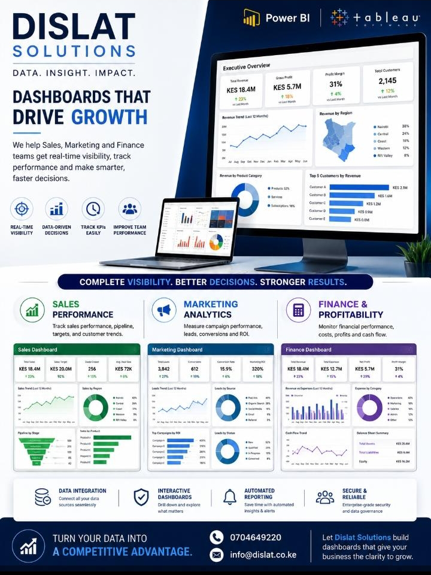

Executive overview
Top-level revenue, cost, margin, customer, and performance indicators.
Data. Insight. Impact.
Real-time dashboards that bring sales, finance, marketing, and operations data into one place, so leaders can track performance and act faster.

What is included
Top-level revenue, cost, margin, customer, and performance indicators.
Focused views for sales, marketing, finance, operations, and management.
Connect spreadsheets, CRM, accounting, ERP, and other source data where practical.
Use cases
Implementation
Clarify decisions, metrics, users, and reporting frequency.
Prepare and structure the data sources behind the dashboard.
Create dashboards for leadership and operating teams.
Hand over dashboards with review routines and improvements.